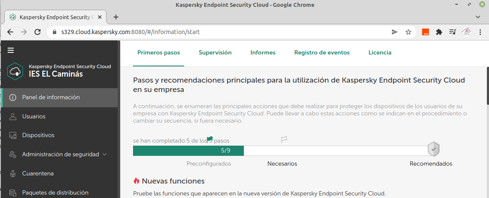
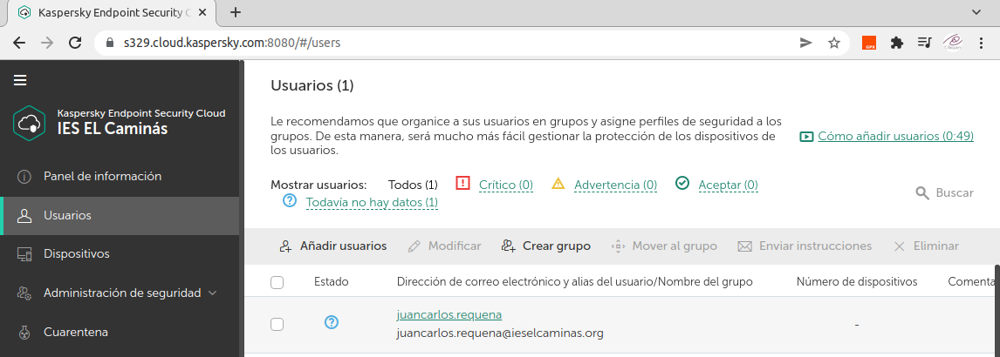
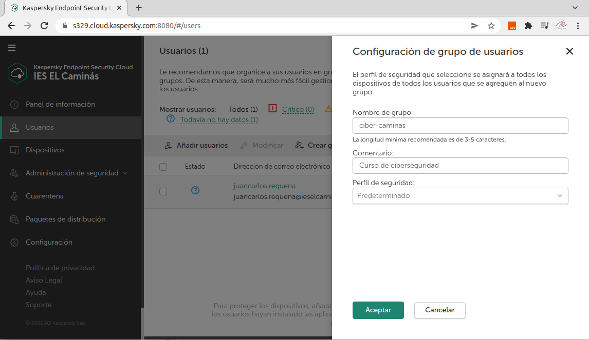
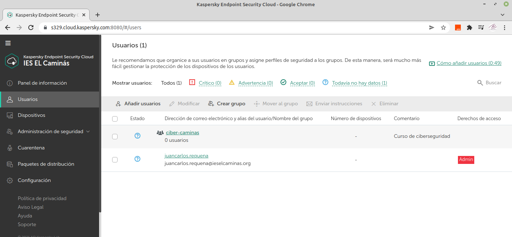
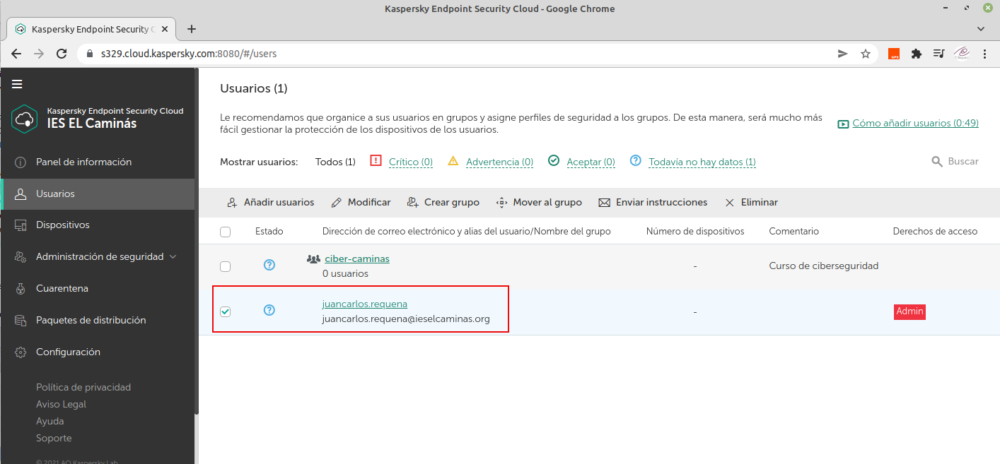
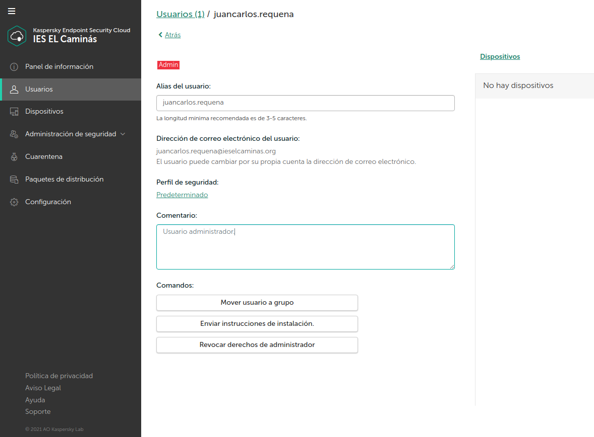
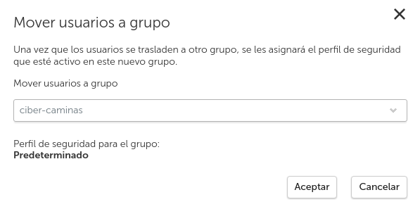
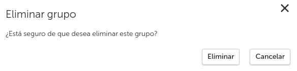

4.2.1.3 Usuarios
1. Creación de usuarios
A través de las cuentas de correo se pueden crear todos los usuarios y después agruparlos para especificar que perfil de seguridad se le asignan.
- Ver y modificar la lista de usuarios.
- Crear grupos de usuarios y distribuir los usuarios entre esos grupos.
- Conceder derechos a los usuarios.
- Editar la información de los usuarios.
2. Visualización de la lista de usuarios
La sección Usuarios de la Consola de gestión de Kaspersky Endpoint Security Cloud muestra los usuarios y grupos de usuarios que se han agregado a la Consola de gestión.
La lista contiene columnas con los siguientes datos de usuarios y sus dispositivos:
- Estado. Un icono refleja el estado de la protección de los dispositivos del usuario (equipos o dispositivos móviles que se hayan conectado a Kaspersky Endpoint Security Cloud), en orden descendente de gravedad:
- (Crítico). Un evento crítico que haya tenido lugar en al menos un dispositivo del usuario, por ejemplo, la detección de un objeto infectado o una instancia de malware.
- (Advertencia). Un evento importante que requiere atención ha ocurrido en al menos un dispositivo del usuario.
- (Sin inconvenientes). Ni eventos críticos ni importantes en los dispositivos del usuario.
- (Desconocido). El usuario no posee ningún dispositivo que esté conectado a Kaspersky Endpoint Security Cloud; o no se pueden recuperar datos sobre los eventos que hayan tenido lugar en tales dispositivos.
Si el usuario tiene varios dispositivos con diferentes estados, se muestra el estado más importante. Por ejemplo, si en distintos dispositivos tienen lugar un evento importante y un evento crítico, se mostrará el estado correspondiente al crítico.
- Dirección de correo electrónico y alias del usuario/Nombre del grupo. Contiene el nombre de usuario y la dirección de correo electrónico (para usuarios independientes) o el nombre de grupo y el número de usuarios del grupo (para grupos de usuarios). Puede hacer clic en el enlace con el nombre para ir a la página con información detallada sobre los usuarios o grupo de usuarios.
- Número de dispositivos. Contiene el número de dispositivos que posee el usuario o grupo de usuarios que están conectados a Kaspersky Endpoint Security Cloud.
- Comentario. Contiene el comentario que introdujo al editar los datos del usuario o al añadir el grupo de usuarios.
- Derechos de acceso. Contiene los derechos de acceso que se le hayan concedido al usuario. La etiqueta Admin significa que se le han concedido derechos de administrador al usuario. Si no se le han concedido derechos de administrador al usuario, esta columna se quedará vacía para este usuario.
- Perfil de seguridad. Contiene el perfil de seguridad que se le ha asignado a la cuenta de usuario o de grupo de usuarios. En caso necesario, puede asignar un perfil de seguridad diferente. Para ello, seleccione uno de la lista desplegable. El perfil de seguridad que haya asignado se aplicará inmediatamente a los dispositivos del usuario.
Puede clasificar la lista de cuentas de usuario por las columnas: Estado, Dirección de correo electrónico y alias del usuario/Nombre del grupo, Número de dispositivos, Comentario o Derechos de acceso.
Para filtrar la lista de usuarios por estado de los dispositivos del usuario, junto a Mostrar usuarios, haga clic en el enlace con el estado del dispositivo correspondiente. Para ver a todos los usuarios independientemente de los estados de sus dispositivos, haga clic en el enlace Todos.
Para clasificar la lista de cuentas de usuario, Haga clic en el enlace que contiene el nombre de la columna. El nombre de la columna se muestra en mayúsculas. Junto al nombre de la columna, una flecha hacia arriba (˄) indica la dirección de la clasificación. Para cambiar la dirección de la clasificación, vuelva a hacer clic. Junto al nombre de la columna, aparece una flecha hacia abajo (˅).
El campo de entrada Buscar para buscar a usuarios está ubicado sobre la lista de usuarios. Puede usar la función de búsqueda para cambiar rápidamente a un usuario en una lista larga.
3. Creación de grupos de usuarios
Puede crear grupos de usuarios para asignar rápidamente a los usuarios perfiles de seguridad que coincidan con sus tareas y el ámbito de sus obligaciones.
No se pueden crear más de 20 grupos de usuarios. A continuación, se describe el proceso.
1.
Abrir la Consola de administración de Kaspersky Endpoint Security Cloud.

2.
A continuación, hay que seleccionar la sección Usuarios. La sección Usuarios contiene una lista de usuarios y grupos de usuarios que se han añadido a Kaspersky Endpoint Security Cloud.

3.
A continuación, hay que hacer clic en el botón Crear grupo que hay sobre la lista de usuarios. Se abrirá la ventana Configuración de grupo de usuarios (consulta la figura siguiente), donde hay que introducir el nombre de un grupo de usuarios y un comentario. En los campos de entrada Nombre de grupo y Comentario, se puede introducir un texto de 255 caracteres como máximo. La cadena puede contener símbolos alfanuméricos en mayúscula y minúscula, espacios en blanco, puntos, comas, signos menos, guiones y guiones bajos.
En la lista desplegable Perfil de seguridad, hay que seleccionar el perfil de seguridad que se quiera asignar al grupo. De forma predeterminada, el perfil de seguridad Predeterminado está seleccionado para cada grupo. El perfil de seguridad Predeterminado lo configuran los expertos de Kaspersky para dispositivos con Windows, Mac, Android e iOS.
Para finalizar, hay que pulsar 'Aceptar'

4.
Los grupos recién creados aparecen en la lista de usuarios y de grupos de usuarios (vea la siguiente imagen). Un grupo recién creado no contiene ningún usuario. Cuando el grupo esté creado, puede proceder a agregar usuarios al grupo.

4. Modificación de la información de usuario
Para la modificación de la información de los usuarios, hay que seguir los siguientes puntos:
1. Abrir la consola de administración de Kaspersky Endpoint Security Cloud.
2. Seleccionar la sección Usuarios. La sección Usuarios contiene una lista de usuarios y grupos de usuarios que se han añadido a Kaspersky Endpoint Security Cloud.
3. En la lista, hay que seleccionar la casilla junto al usuario cuya información se desea editar.

4. Hay que hacer clic en el botón Modificar que hay sobre la lista de usuarios. Se abrirá una ventana que contiene la información detallada sobre el usuario. A continuación, hay que Editar la información de los usuarios:
- Alias de usuario.
- Dirección de correo electrónico.
No se puede editar las direcciones de correo electrónico de los usuarios a los que se les han otorgado derechos de administrador. Tales usuarios pueden modificar sus direcciones de correo electrónico en el portal de Kaspersky Business Hub.
- Comentario
Si quiere mover usuarios a un grupo, conceder derechos de administrador a usuarios (o revocar los derechos de administrador) o enviarles instrucciones para que instalen una aplicación de seguridad en sus dispositivos, hay que hacer clic en los botones correspondientes de la sección Comandos.

5. Para consolidar los cambios, hay que realizar clic en el botón Guardar. También se puede editar la información del usuario al abrir la ventana de un usuario. Para modificar la información de un usuario, hay que hacer clic en el enlace del nombre de la cuenta de usuario y hacer clic en Modificar.
Los datos que se editen, se mostrarán en la lista de cuentas de usuario y en la página de configuración de usuario.
5. Traspaso de usuarios de un grupo a otro
Para traspasar usuarios de un grupo a otro, hay que seguir los siguientes puntos:
1. Abrir la consola de administración de Kaspersky Endpoint Security Cloud.
2. Seleccionar la sección Usuarios. La sección Usuarios contiene una lista de usuarios y grupos de usuarios que se han añadido a Kaspersky Endpoint Security Cloud.
3. En la lista, hay que seleccionar la casilla junto al usuario que se desea añadir al grupo.
4. Hacer clic en el botón Mover al grupo que hay sobre la lista. El botón Mover al grupo solo está disponible si se ha creado al menos un grupo. Se abrirá la ventana Mover usuarios a grupo. En la lista desplegable, hay que seleccionar el nombre del grupo al que se desea mover el usuario (ejemplo: mover al grupo ciber-caminas).

5. Por último, hay que hacer clic en el botón Aceptar para que el usuario se añada al grupo.
Se pueden añadir los usuarios mientras se encuentra en la ventana de un grupo. Para añadir un usuario, hay que hacer clic en el enlace del nombre de un grupo y hacer clic en Añadir usuarios.
Los usuarios añadidos a un grupo no aparecen en la lista general de usuarios. El perfil de seguridad que tuviera asignado el usuario se reemplazará por el perfil de seguridad que haya asignado al grupo al que se ha añadido la cuenta de usuario
6. Eliminación de cuentas de usuario
Para eliminar cuentas de usuario, hay que seguir los siguientes puntos:
1. Abrir la consola de administración de Kaspersky Endpoint Security Cloud.
2. Seleccionar la sección Usuarios. La sección Usuarios contiene una lista de usuarios y grupos de usuarios que se han añadido a Kaspersky Endpoint Security Cloud.
3. A continuación, hay que seleccionar la casilla de verificación junto al nombre del usuario o junto a varios nombres de usuarios que se desean eliminar.
4. A continuación, hay que hacer clic en el botón Eliminar que hay sobre la lista.
Después de confirmar la eliminación del usuario, Kaspersky Endpoint Security Cloud elimina la cuenta de usuario de la lista.
Si el usuario es el administrador, se le enviará un mensaje de correo electrónico sobre la revocación de los derechos de administrador.
Existen restricciones en la eliminación de usuarios:
- No puede eliminar un usuario que tiene dispositivos administrados. Si tiene que eliminar la cuenta de usuario de un propietario del dispositivo, primero debe eliminar los dispositivos que posea dicho usuario.
- No puede eliminar la cuenta del administrador único de la empresa.
7. Eliminación de grupos de usuarios
Para traspasar usuarios de un grupo a otro, hay que seguir los siguientes puntos:
1. Abrir la consola de administración de Kaspersky Endpoint Security Cloud.
2. Seleccionar la sección Usuarios. La sección Usuarios contiene una lista de usuarios y grupos de usuarios que se han añadido a Kaspersky Endpoint Security Cloud.
3. A continuación, hay que seleccionar la casilla de verificación que hay junto al nombre del grupo de usuarios que desee eliminar.
4. A continuación, hay que hacer clic en el botón Eliminar que hay sobre la lista, se abrirá la ventana Eliminar grupo.

5. Si el grupo de usuarios contiene al menos un usuario, en la lista desplegable de la ventana Eliminar grupo, se le solicitará que seleccione un grupo o lista general de cuentas de usuario donde mover los usuarios del grupo que se eliminará.
6. Hay que hacer clic en el botón Quitar para confirmar la eliminación del grupo. Después de mover a los usuarios, el grupo de usuarios se elimina.
Obra publicada con Licencia Creative Commons Reconocimiento No comercial Compartir igual 4.0